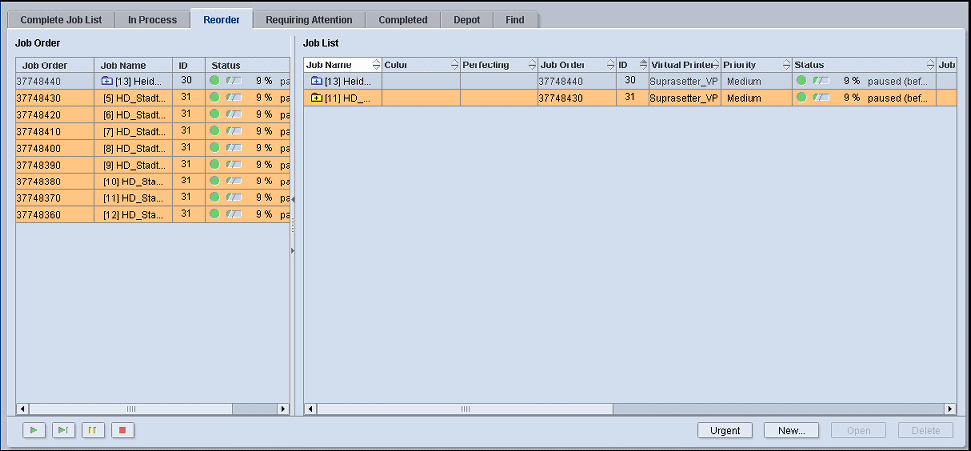
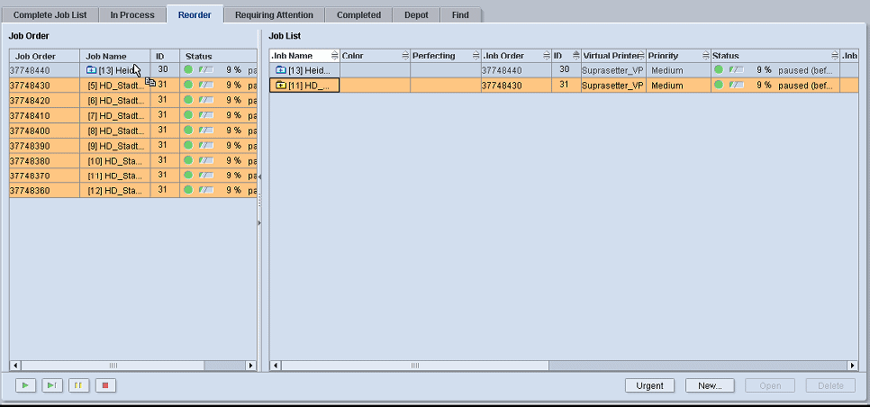

Во вкладке «Заказать» можно изменить порядок обработки «ожидания» заданий, например, отдать приоритет срочным рабочим местам.

Список «Распоряжение о работе» представляет собой порядок, в котором задания будут производиться: чем выше задание в списке, тем быстрее она будет производиться. «Список заданий» справа показывает задания в том порядке, в котором они установлены, используя параметры сортировки заголовков таблицы. По умолчанию это порядок, в котором задания прибывают в Prinect Shooter.
 Примечание: Prinect Shooter не обязательно должен соответствовать индивидуальному заказу, например, если состояние пластины является предварительной загрузкой в устройстве вывода.
Примечание: Prinect Shooter не обязательно должен соответствовать индивидуальному заказу, например, если состояние пластины является предварительной загрузкой в устройстве вывода.
Список «Распоряжение о работе» представляет собой порядок, в котором задания будут производиться: чем выше задание в списке, тем быстрее она будет производиться. «Список заданий» справа показывает задания в том порядке, в котором они установлены, используя параметры сортировки заголовков таблицы. По умолчанию это порядок, в котором задания прибывают в Prinect Shooter.
Вы можете изменить порядок одной или нескольких заданий, пометив задание (работы) в «Списке задач», а затем отобразив контекстно-чувствительное меню правым кликом.
Команда «Сортировать в Заказ на работу» перед первой Заявкой позволяет разместить выбранные задания в верхней части Заказа на работу, если другая задание в настоящее время не обрабатывается. Если это так, выбранные задания размещаются непосредственно под вакансией, которая в настоящее время обрабатывается.
Команда «Сортировать в Заказ на работу» после последнего Задания позволяет размещать задания, которые не так срочные в конце списка «Заказ на работу».
Примечание: Команда «Switch Tables» позволяет переключать список заказов и список заданий.
Вы можете изменить порядок работы, перетащив и уронив их. Сделайте это, выбрав один или несколько пунктов в «Списке заданий» и перетащите их в нужное положение в «Заказе заданий». Задания, которые вы перетаскиваете, сортируются выше работы, которую вы указали указателем мыши. В отсортированном серийном выпуске это положение выше первого разделения этой работы.
Примечание: Вы можете использовать «Clear Selection» для отзыва выбранных вами заданий.

Таким образом, вы можете размещать отдельные задания на любой должности, которую вы хотите в «Заказе на работу», если другая задание в настоящее время не обрабатывается. Если это так, выбранные задания размещаются непосредственно под вакансией, которая в настоящее время обрабатывается.
Аналогичным образом, вы можете использовать перетаскивание для размещения заданий, которые не так срочные в конце списка «Заказ на работу».
В списке «Заказ на работу» вы можете возобновить обработку отдельных или нескольких заданий, которые «приостановлены». Для этого выберите задания и нажмите кнопку «Пуск».
Таким образом, вы можете переместить выбор «приостановленных» заданий из списка в список «Заказа на работу», например, для подготовки рабочей смены. Когда начнется смена, вы можете выбрать нужные вам задания и продолжить их обработку кнопкой «Пуск».
Задания переходят в самую верхнюю часть списка «Заказ на работу» после того, как вы выберете их в «Списке на работу», а затем нажмите «Срочный». Это делается в том случае, если в данный момент не выполняется другая задание. Если это так, выбранные задания размещаются непосредственно под вакансией, которая в настоящее время обрабатывается (см. Печать «Срочные» задания).
Copyright © 2013 Heidelberger Druckmaschinen AG